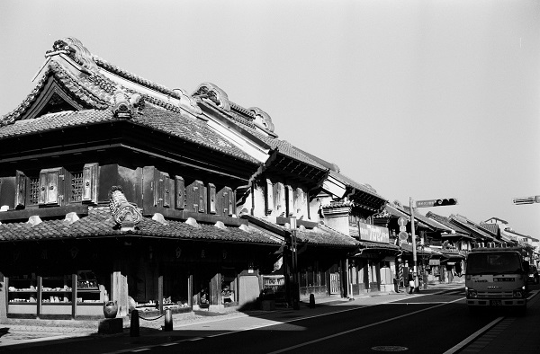

板橋宿の追分（中山道）を出発して藤岡市藤岡まで約90Km 標高差あまりない 埼玉県の自宅から電車を乗り継ぎ日帰り 計5日間で完歩する。ｽﾀｰﾄは日本橋にしました。
| 年月日 | 出発駅・時間 | 到着駅・時間 | 歩き距離・時間 | 写真ﾌﾞﾛｸﾞ |
|---|---|---|---|---|
| 2014/10/11 | 東京駅_8：56 | 和光市駅_14：48 | 24.9Km：5時間52分 | 2014/10 2014/10 2014/10 |
| 2014/10/12 | 和光市駅_8:56 | 川越市駅_15:00 | 23.8Km：6時間3分 | 2014/10 |
| 2014/11/7 | 川越市駅_8:49 | 武蔵嵐山駅_15:44 | 28.3Km：6時間55分 | 2014/11 2014/11 |
| 2014/11/24 | 武蔵嵐山駅_9：51 | 用土駅_15:25 | 23.5Km：5時間34分 | 2014/11 2014/11 |
| 2014/11/27 | 用度駅_10:03 | 群馬藤岡駅_15:05 | 19.2Km：5時間2分 | 2014/11 完歩... |
小江戸川越 蔵造りの街並み
